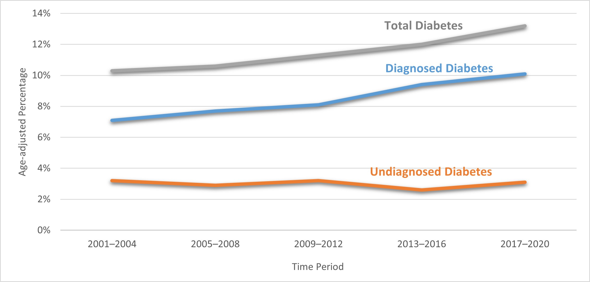
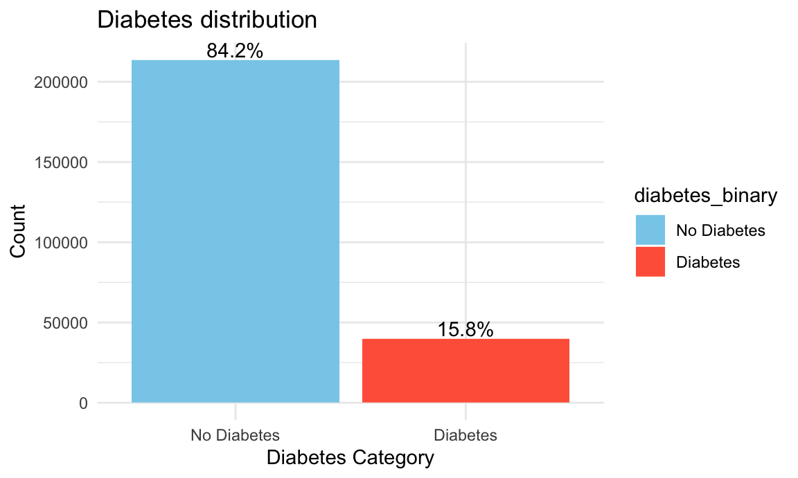
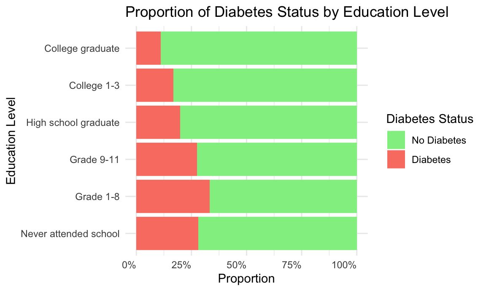
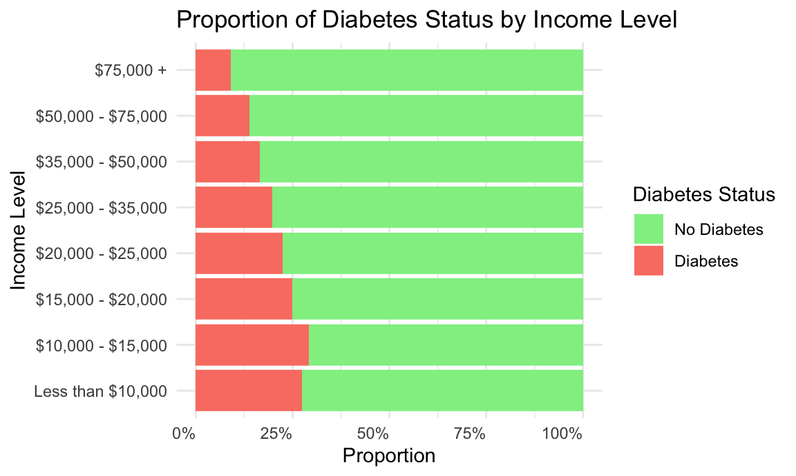

Yvonne Xie, Rosie Kwon, Vicky Yang, Yiying Chen, Charlotte Zhang
Diabetes is a major public health concern in the United States. According to the Centers for Disease Control and Prevention (CDC), diabetes was the one of the leading causes of death in the United States in 2020 with 103,294 deaths. Beyond its health impact, the economic burden is substantial, with annual costs to patients and the health care system more than $412.9 billion in 2022.
Between 2001 and 2020, the age-adjusted prevalence of diabetes among U.S. adults increased significantly. As shown in Figure below, this trend highlights the increasing urgency of addressing diabetes at the population level.

Data sources: 2001–March 2020 National Health and Nutrition Examination Surveys.As Type 2 diabetes is largely preventable, identifying risk factors such as physical activity, smoking, and blood pressure levels is essential for guiding preventive interventions and health education efforts.
Our project aims to analyze how behavioral factors are associated with diabetes prevalence using the CDC’s Behavioral Risk Factor Surveillance System (BRFSS) data. Also, we aim to develop a predictive model that estimates diabetes risk based on their health indicators. By the end of this project, we hope to provide actionable insights into the most influential factors associated with diabetes and to inform effective prevention and health promotion initiatives.
What questions are you trying to answer? How did these questions evolve over the course of the project? What new questions did you consider in the course of your analysis?
This Kaggle dataset Diabetes Health Indicators used data collected from Behavioral Risk Factor Surveillance System (BRFSS), a health-related telephone survey that is collected annually by the CDC. Each year, the survey collects responses from over 400,000 Americans on health-related risk behaviors, chronic health conditions, and the use of preventative services. It has been conducted every year since 1984. This specific dataset was from 2015. These features are either questions directly asked of participants, or calculated variables based on individual participant responses.
#Load & Clean Dataset
diabetes =
read_csv("Diabete datasets/diabetes_012_health_indicators_BRFSS2015.csv") |>
janitor::clean_names() |>
mutate(
sex = case_match(
sex,
0 ~ "Female",
1 ~ "Male"
),
sex = factor(sex),
age = case_match(
as.numeric(age),
1 ~ "18-24",
2 ~ "25–29",
3 ~ "30–34",
4 ~ "35–39",
5 ~ "40–44",
6 ~ "45-49",
7 ~ "50-54",
8 ~ "55-59",
9 ~ "60-64",
10 ~ "65-69",
11 ~ "70-74",
12 ~ "75-79",
13 ~ "80+"
),
age =
factor(age,
levels =
c("18-24","25–29", "30–34", "35–39",
"40–44","45-49","50-54","55-59",
"60-64","65-69","70-74","75-79","80+"),
ordered = TRUE),
education = case_match(
as.numeric(education),
1 ~ "Never attended school",
2 ~ "Grade 1-8",
3 ~ "Grade 9-11",
4 ~ "High school graduate",
5 ~ "College 1-3",
6 ~ "College graduate"
),
education =
factor(education,
levels =
c("Never attended school","Grade 1-8", "Grade 9-11",
"High school graduate","College 1-3",
"College graduate"),
ordered = TRUE),
income = case_match(
as.numeric(income),
1 ~ "Less than $10,000",
2 ~ "$10,000 - $15,000",
3 ~ "$15,000 - $20,000",
4 ~ "$20,000 - $25,000",
5 ~ "$25,000 - $35,000",
6 ~ "$35,000 - $50,000",
7 ~ "$50,000 - $75,000",
8 ~ "$75,000 +"
),
income =
factor(income,
levels =
c("Less than $10,000","$10,000 - $15,000",
"$15,000 - $20,000","$20,000 - $25,000",
"$25,000 - $35,000","$35,000 - $50,000",
"$50,000 - $75,000","$75,000 +"),
ordered = TRUE),
gen_hlth = case_match(
as.numeric(gen_hlth),
1 ~ "Poor",
2 ~ "Fair",
3 ~ "Good",
4 ~ "Very Good",
5 ~ "Excellent"
),
gen_hlth =
factor(gen_hlth,
levels =
c("Poor", "Fair", "Good", "Very Good", "Excellent"),
ordered = TRUE),
diabetes_012 =
factor(diabetes_012,
levels = c(0,1,2),
labels = c("No Diabetes", "Prediabetes", "Diabetes")),
diabetes_2 = case_when(
diabetes_012 == "No Diabetes" ~ 0,
diabetes_012 != "No Diabetes" ~ 1
),
diabetes_2 = as.factor(diabetes_2)
)## Rows: 253680 Columns: 22
## ── Column specification ─────────────────────────────────────
## Delimiter: ","
## dbl (22): Diabetes_012, HighBP, HighChol, CholCheck, BMI, Smoker, Stroke, He...
##
## ℹ Use `spec()` to retrieve the full column specification for this data.
## ℹ Specify the column types or set `show_col_types = FALSE` to quiet this message.binary_vars = c(
"high_bp", "high_chol", "chol_check",
"smoker", "stroke", "heart_diseaseor_attack",
"phys_activity", "hvy_alcohol_consump", "any_healthcare",
"no_docbc_cost", "diff_walk", "fruits", "veggies"
)
diabetes[binary_vars] = lapply(
diabetes[binary_vars],
function(x) factor(ifelse(x == 1, "Yes", "No"))
)
saveRDS(diabetes, "clean_diabetes_data.rds")Data have 253680 records and 23 variables. Each record corresponds to an individual respondent and includes information on demographics, health conditions, lifestyle behaviors, and healthcare access.
In our data cleaning and preprocessing steps, we did the following:
For example, the sex variable was coded as 0 and 1. We converted it to “Female” and “Male” and then turned it into a factor variable.
Similarly, age, income, GenHlth(general health) and education were originally numeric codes representing ranges or categories. We mapped these codes to descriptive labels and and specified ordered factors so that analyses respect the natural order of these categories.
Several binary variables, such as high_bp (high blood pressure), smoker, and phys_activity (physical activity), were coded as 0 and 1.
We converted these to “Yes”/“No” factors to make the dataset more interpretable.
The variable diabetes_012 indicates whether a person has
No Diabetes, Prediabetes, or Diabetes. This is a factor with three
levels. For some analyses, we also created a binary target variable,
diabetes_2, which groups individuals into two categories:
non-diabetes and diabetes.
This binary variable simplifies modeling to predict the presence or absence of diabetes, while the original three-level factor can still be used for more detailed analyses or exploratory data visualization.
#data summary
library(skimr)
skim(diabetes)| Name | diabetes |
| Number of rows | 253680 |
| Number of columns | 23 |
| _______________________ | |
| Column type frequency: | |
| factor | 20 |
| numeric | 3 |
| ________________________ | |
| Group variables | None |
Variable type: factor
| skim_variable | n_missing | complete_rate | ordered | n_unique | top_counts |
|---|---|---|---|---|---|
| diabetes_012 | 0 | 1 | FALSE | 3 | No : 213703, Dia: 35346, Pre: 4631 |
| high_bp | 0 | 1 | FALSE | 2 | No: 144851, Yes: 108829 |
| high_chol | 0 | 1 | FALSE | 2 | No: 146089, Yes: 107591 |
| chol_check | 0 | 1 | FALSE | 2 | Yes: 244210, No: 9470 |
| smoker | 0 | 1 | FALSE | 2 | No: 141257, Yes: 112423 |
| stroke | 0 | 1 | FALSE | 2 | No: 243388, Yes: 10292 |
| heart_diseaseor_attack | 0 | 1 | FALSE | 2 | No: 229787, Yes: 23893 |
| phys_activity | 0 | 1 | FALSE | 2 | Yes: 191920, No: 61760 |
| fruits | 0 | 1 | FALSE | 2 | Yes: 160898, No: 92782 |
| veggies | 0 | 1 | FALSE | 2 | Yes: 205841, No: 47839 |
| hvy_alcohol_consump | 0 | 1 | FALSE | 2 | No: 239424, Yes: 14256 |
| any_healthcare | 0 | 1 | FALSE | 2 | Yes: 241263, No: 12417 |
| no_docbc_cost | 0 | 1 | FALSE | 2 | No: 232326, Yes: 21354 |
| gen_hlth | 0 | 1 | TRUE | 5 | Fai: 89084, Goo: 75646, Poo: 45299, Ver: 31570 |
| diff_walk | 0 | 1 | FALSE | 2 | No: 211005, Yes: 42675 |
| sex | 0 | 1 | FALSE | 2 | Fem: 141974, Mal: 111706 |
| age | 0 | 1 | TRUE | 13 | 60-: 33244, 65-: 32194, 55-: 30832, 50-: 26314 |
| education | 0 | 1 | TRUE | 6 | Col: 107325, Col: 69910, Hig: 62750, Gra: 9478 |
| income | 0 | 1 | TRUE | 8 | $75: 90385, $50: 43219, $35: 36470, $25: 25883 |
| diabetes_2 | 0 | 1 | FALSE | 2 | 0: 213703, 1: 39977 |
Variable type: numeric
| skim_variable | n_missing | complete_rate | mean | sd | p0 | p25 | p50 | p75 | p100 | hist |
|---|---|---|---|---|---|---|---|---|---|---|
| bmi | 0 | 1 | 28.38 | 6.61 | 12 | 24 | 27 | 31 | 98 | ▇▅▁▁▁ |
| ment_hlth | 0 | 1 | 3.18 | 7.41 | 0 | 0 | 0 | 2 | 30 | ▇▁▁▁▁ |
| phys_hlth | 0 | 1 | 4.24 | 8.72 | 0 | 0 | 0 | 3 | 30 | ▇▁▁▁▁ |
The data variables that will be included in the EDA are:
Diabetes_012: 0 = no diabetes 1 = prediabetes 2 =
diabetes
Diabetes_2 : 0 = no diabetes 1 =
prediabetes/diabetes
HighBP: high blood pressure (0 = no 1 = yes)
HighChol: high cholesterol (0 = no 1 = yes)
CholCheck: cholesterol check in 5 years (0 = no 1 =
yes)
BMI: Body Mass Index
Smoker: Have you smoked at least 100 cigarettes in your
entire life? (0 = no 1 = yes)
Stroke: (ever told) you had a stroke (0 = no 1 =
yes)
HeartDiseaseorAttack: coronary heart disease (CHD) or
myocardial infarction (MI) (0 = no 1 = yes)
PhysActivity: physical activity in past 30 days (0 = no
1 = yes)
Fruits: consume fruit 1 or more times per day (0 = no 1
= yes)
Veggies: consume vegetables 1 or more times per day (0 =
no 1 = yes)
HvyAlcoholConsump: adult men >=14 drinks per week and
adult women>=7 drinks per week (0 = no 1 = yes)
AnyHealthcare: have any kind of health care coverage,
including health insurance, prepaid plans such as HMO, etc. (0 = no 1 =
yes)
NoDocbcCost: was there a time in the past 12 months when
you needed to see a doctor but could not because of cost? (0 = no 1 =
yes)
GenHlth: would you say that in general your health is:
scale 1-5
MentHlth: which includes stress, depression, and
problems with emotions, for how many days during the past 30 days was
your mental health not good?
PhysHlth: which includes physical illness and injury,
for how many days during the past 30 days was your physical health not
good?
DiffWalk: do you have serious difficulty walking or
climbing stairs? (0 = no 1 = yes)
Sex: 0 = female 1 = male
Age: 13-level age category
Education: education level: scale 1-6
Income: income scale: scale 1-8
To begin the analysis, we examine how diabetes variable is distributed across the three diagnostic categories.
Because prediabetes accounts for a very small proportion of the sample, and because both diabetes and prediabetes represent elevated metabolic risk, we combined these two categories into a single “at-risk” group.
diabetes =
diabetes |>
mutate(
diabetes_binary =
factor(diabetes_2,
levels = c(0,1),
labels = c("No Diabetes", "Diabetes")),
)
diabetes |>
count(diabetes_binary) |>
mutate(
percent = round(n / sum(n) * 100, 1)
) |>
ggplot(aes(x = diabetes_binary, y = n, fill = diabetes_binary)) +
geom_col() +
geom_text(aes(label = paste0(percent, "%"),vjust = -0.2),
) +
scale_fill_manual(
values = c(
"No Diabetes" = "skyblue",
"Diabetes" = "tomato"
)
) +
labs(
title = "Diabetes distribution",
x = "Diabetes Category",
y = "Count"
) +
theme_minimal()
The 84.2% of population in the dataset do not have diabetes while 15.6% reported having Diabetes. Although diabetes affects a smaller portion of the sample, it still represents a substantial public health concern given the large population size.
We examined the demographic structure of the BRFSS sample dataset, including age, sex, education, income, and general health.
Understanding population characteristics provides important context for interpreting diabetes prevalence and identifying meaningful risk patterns.
diabetes |>
group_by(age, sex) |>
summarize(
diabetes_rate = mean(diabetes_2 == 1)) |>
plot_ly(
x = ~age,
y = ~diabetes_rate,
color = ~sex,
colors = c("tomato","skyblue"),
type = "scatter",
mode = "markers"
) |>
layout(
title = "Diabetes prevalence by Sex and Age Group",
xaxis = list(title = "Age Group"),
yaxis = list(title = "Diabetes Rate")
)## `summarise()` has grouped output by 'age'. You can override
## using the `.groups` argument.Diabetes prevalence increases steadily with age for both males and females. The rate of diabetes increases rapidly from 40s and peak at aged 70-74. Prevalence of diabetes is higher in male compared to female across all age groups, indicating that a sex-specific pattern in diabetes risk that becomes more pronounced with age.
In order to compare diabetes risk across education levels, a proportional plot was used since the large differences in group sizes can mask prevalence differences.
ggplot(diabetes, aes(y = education, fill = diabetes_binary)) +
geom_bar(position = "fill") +
scale_fill_manual(values = c(
"No Diabetes" = "lightgreen",
"Diabetes" = "salmon"
)) +
scale_x_continuous(labels = scales::percent_format()) +
labs(
title = "Proportion of Diabetes Status by Education Level",
x = "Proportion",
y = "Education Level",
fill = "Diabetes Status"
) +
theme_minimal() +
theme(axis.text.x = element_text(hjust = 1))
The proportional plot indicates that the distribution of diabetes status is relatively consistent across education levels. There is gradient suggesting that lower educational attainment is slightly more associated with markedly different diabetes prevalence.
Even though the number of diabetes cases appears visually similar across income levels, we used a proportional plot for income variable as there are large differences in total sample size between income groups..
ggplot(diabetes, aes(y = income, fill = diabetes_binary))+
geom_bar(position = "fill") +
scale_fill_manual(values = c(
"No Diabetes" = "lightgreen",
"Diabetes" = "salmon"
)) +
scale_x_continuous(labels = scales::percent_format()) +
labs(
title = "Proportion of Diabetes Status by Income Level",
x = "Proportion",
y = "Income Level",
fill = "Diabetes Status"
) +
theme_minimal() +
theme(axis.text.x = element_text(hjust = 1))
The proportional plot indicates an inverse relationship between income and diabetes prevalence. Individuals with lower income levels show a higher proportion of diabetes, whereas those with higher income levels have a noticeably lower diabetes proportion.